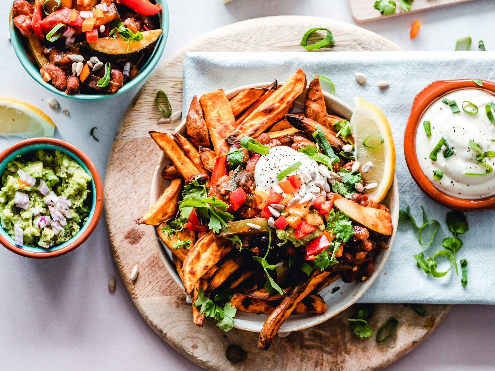

Trends
March 17, 2020
Rameen
Restaurants which are changing the food scene of Karachi
Karachi has officially welcomed its short-lived winter season this week, and naturally, that means people are flocking all across the metropolis to find out what the city has on offer. However, long gone are the days to find grilled fish corners mushrooming up on the sidewalks. It’s all about experimental ‘gastronomie’ and Karachi, finally seems to be waking up to the global trend. Jotting down 5 places which are experimenting with cuisine this season, Todo has a list that you need to put on your bucket list…